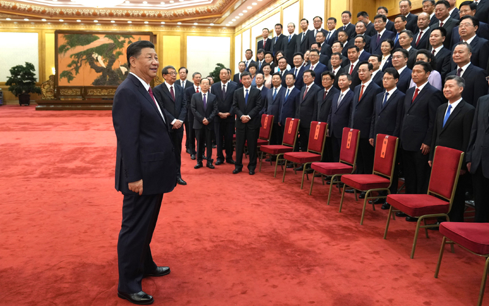
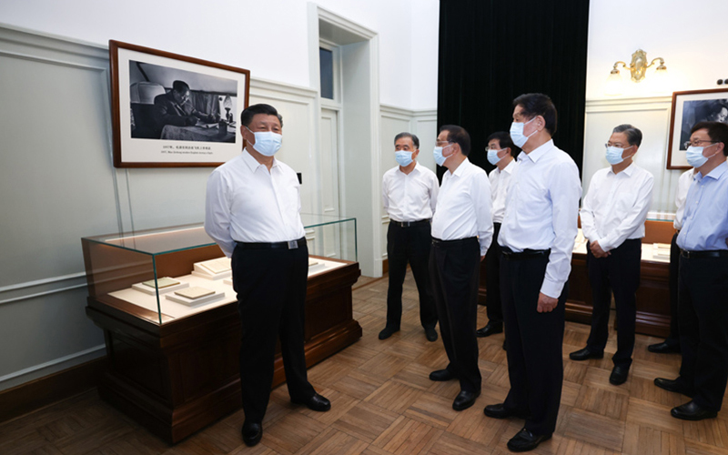
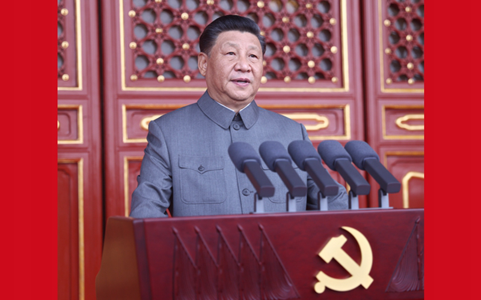

- 
- 
- 
-

重要部署
英雄事迹
-
杨靖宇
杨靖宇（1905年2月-1940年2月23 日），男，汉族，原名马尚德，字赛 生，河有省虎山县李湾村人,中国共产 党优秀党员，无产阶级革命家、乏事 家、著名抗日民族英雄,鄂豫皖苏区及 其点三约色跆人之一.星北抗日联三约 主要创建者和领导人之一.
-
雷锋
1954年加入中国少年先锋队，1960年 参加中国人民解放军，同年11月加入中 国共产党.1961年5月,雷管乍为所在 部队候选人，被选为辽宁省抚顺市第四 届人民代表大会代表.1962年2月19 日，雷择以特邀代表身份，出席沈阳亘 区首届共产主义青年团代表会议，并被 选为主席团成员在大会上发言.
-

刘胡兰
刘胡兰（1932年10月8日—1947旬月 12日），女，汉族，⑴原名刘富兰， 山西省吕梁市文水县云周西村人.著名 的 革 命 先 烈 ， 优 秀 共 F 员 . 组 织 参 与 妇女革命工作100位为新中国成立作出 突出责献的英雄模范人物之一
-
左权
左权（1905年3月15日-1942年5月25 日），字孳孩,号叔仁，原名左纪权。 ［1］湖南醴陵人，［2］黄浦军校一期生， 1925仝加入中国共产党，是中匡1工农红 三和八路亘高级将领，无产阶级革命 家、军事家。